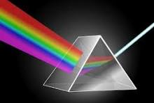
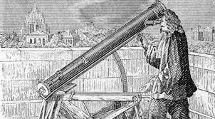
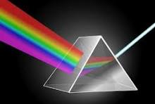
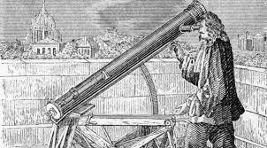

Isaac Newton
"Si he logrado ver más lejos, ha sido porque me he alzado a hombros de gigantes."🍎 El Enigma de la Manzana
En el verano de 1665, mientras huía de la Gran Peste en Londres, Newton observó una manzana caer en su jardín de Woolsthorpe. Este evento no fue un golpe en la cabeza, sino el inicio de una duda universal: ¿Por qué los objetos caen siempre hacia abajo?
Newton dedujo que la fuerza que atraía la manzana era la misma que mantenía a los planetas en sus órbitas, unificando por primera vez la física terrestre y la celeste.
🔬 Las Tres Leyes de la Dinámica
Su obra Philosophiæ naturalis principia mathematica cambió la humanidad al definir cómo se mueve todo en el cosmos:
- Inercia: Un cuerpo no cambia su estado a menos que una fuerza externa actúe sobre él.
- Fuerza (F = ma): La aceleración es proporcional a la fuerza e inversamente proporcional a la masa.
- Acción y Reacción: Por cada fuerza ejercida, existe otra igual pero en sentido opuesto.
🔮 Alquimista de Sombras
Pocos saben que Newton dedicó más tiempo a la alquimia y la teología que a la física. En su laboratorio buscaba la "Piedra Filosofal" y estudió las dimensiones del Templo de Salomón para encontrar códigos numéricos divinos. Para él, el universo era un mensaje cifrado de Dios.
🌈 La Anatomía de la Luz
Usando un prisma en una habitación oscura, Newton demostró que la luz blanca es en realidad una mezcla de todos los colores visibles. Este hallazgo destruyó la creencia antigua de que el color era una propiedad de los objetos y no de la luz misma.
 


